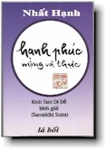

|
BuddhaSasana Home Page |
Vietnamese, with Unicode Times font |
|  |
Hạnh phúc mộng và thực: Thích Nhất Hạnh |
|
CHƯƠNG 1 TÊN VÀ NGUỒN GỐC KINH TAM DI ĐỀ1.1 Nguồn Gốc Tên Kinh Kinh Tam Di Đề hiện giờ ta có ba bản, một bản tiếng Pali và hai bản chữ Hán (Tạp A Hàm và Biệt Dịch Tạp A Hàm). Kinh Tam Di Đề mà ta đang đọc được dịch từ Hán Tạng, đó là kinh số 1078 trong Tạp A Hàm. Tam Di Đề tiếng Phạn là Samiddhi, Samiddhi là tên của một thầy còn trẻ, khoảng 22, 23 tuổi. Thầy Samiddhi được sinh ra trong một gia đình trâm anh thế phiệt, sống tại thủ đô Vương Xá (Ràjagaha). Ngày xưa trước khi thành đạo, Bụt có hứa với vua Tần Bà Xa La (Bimbisara) là sau khi thành đạo thế nào Ngài cũng về để giúp vua. Lúc đó Bụt còn là một vị sa môn đang đi tìm đạo và hai người đã gặp nhau trên một khu đồi ở gần Thành Vương Xá. Vua Tần Ba Xa La rất cảm phục Bụt và đã khẩn khoản mời Ngài về làm Quốc Sư, nhưng Bụt đã nói: "Bần đạo xin cảm tạ tấm lòng chiếu cố của Đại Vương, nhưng quả thật giờ đây bần đạo chỉ có một ước vọng mà thôi, đó là ước vọng tìm cho ra chánh đạo để cứu giúp muôn loài. Cuộc sống rất vô thường, cái khổ của sinh, lão, bệnh, tử luôn luôn rình rập ta, những ngọn lửa phiền não từ nội tâm như tham vọng, giận dữ, oán thù, si mê, ganh ghét và kiêu mạn đang nung nấu tâm hồn ta, và ta chỉ có thể đạt tới an lạc thật sự nếu ta tìm được con đường tu tập. Chỉ khi nào Đạo Lớn được tìm ra thì mọi loài mới có con đường giải thoát. Nếu Bệ Hạ có lòng yêu mến bần đạo, xin Bệ Hạ để cho bần đạo được theo đuổi con đường mà kẻ tu hành này đã hướng đến từ lâu. Bần đạo xin hứa là khi nào tìm ra được đạo, bần đạo sẽ trở về chia xẻ với Đại Vương". Vì vậy sau khi thành đạo, lập được tăng thân ở Vườn Nai, trở về thăm cây bồ đề, điều phục ba anh em ông Ca Diếp thờ Thần Lửa, và thu nhận gần một ngàn môn đồ của ba vị này làm đệ tử xuất gia, Bụt đã đưa cả giáo đoàn đó về thủ đô Vương Xá, cư trú tại Rừng Kè mới trồng ở ngoại ô, cách thủ đô hai dặm về phía Nam. Buổi sáng giáo đoàn được phép vào thành để khất thực. Các vị khất sĩ tổ chức thành từng chúng hai mươi lăm người, bước từng bước khoan thai và có ý thức, tay ôm bình bát, mắt nhìn thẳng về phía trước, dáng điệu rất uy nghi. Dân chúng trong thành rất ngạc nhiên khi thấy có một giáo đòan khất sĩ mới, đông đảo nhưng rất trang nghiêm. Bụt cũng đã đi khất thực chung với các thầy. Cgỉ trong vòng nửa tháng, phần lớn dân chúng thủ đô đã biết tới sự có mặt của giáo đoàn khất sĩ do Bụt lãnh đạo. Tiếng đồn tới tai vua và vua biết là Người xưa đã trở về, Bụt chưa kịp đi thăm vua thì một buổi chiều, vua cùng hoàng hậu và thái tử đã ngồi xe tứ mã tìm về Rừng Kè để thăm Bụt. Tháp tùng vua có nhiều nhân sĩ, trí thức và lãnh đạo cao cấp trong giới Bà la môn, trong đó có thân phụ của Samiddhi. Lúc đó Samiddhi là một người trẻ, cũng được đi theo phái đoàn. Cố nhiên chàng không phải là một thanh niên tầm thường. Nếu không có tài, không có ưu thế trong xã hội thì đâu dễ gì chàng được tham dự vào phái đoàn để đi thăm Bụt. SƯ CHÚ SAMIDDHI VÀ MA VƯƠNG Ngay lần đầu được gặp Bụt và chứng kiến cuộc nói chuyện giữa Bụt và vua Tần Bà Xa La, Samiddhi đã có ý định muốn xuất gia, và người trai trẻ này là một trong những thanh niên đầu tiên ở thành Vương Xá được chấp nhận vào giáo đoàn của Bụt và thầy sống rất an lạc. Sau vài ba năm tu học, trong một đêm thiền tọa thầy Samiddhi quán chiếu thấy mình thật may mắn đã được chấp nhận vào trong giáo đoàn mầu nhiệm này và thầy cảm thấy rất hạnh phúc. Bỗng nhiên thầy nghe một tiếng nổ kinh hoàng giống như là trái đất vỡ tung, làm thầy rất hoảng sợ. Ngày hôm sau tìm tới Bụt thầy kể lại câu chuyện đã xảy ra: "Bạch Đức Thế Tôn, con đang thiền tọa rất an lạc, đang ý thức được sự may mắn của con vì được xuất gia từ lúc còn trẻ tuổi, thì tự nhiên có một tiếng nổ giống như quả đất này đang vỡ tung. Con đã rất sợ nên đến với Đức Thế Tôn để hỏi Ngài là con phải đối trị với cái sợ ở trong con như thế nào?" Bụt nói: "Này Samiddhi Đó là ma phiền não trong tâm quấy nhiễu con. Con chỉ cần biết đó là ma phiền não thôi thì tự nhiên con sẽ bình an, hết sợ. Con đừng đi trốn ở một nơi khác, cứ ở ngay chỗ đó để tu học". Vài ngày sau khi trở về trung tâm đó, cũng vào nửa đêm, trong khi thiền tọa, thầy Samiddhi lại nghe một tiếng nổ kinh hoàng giống như kỳ trước. Thầy mỉm cười, thở vào, thở ra, và nói: "Đây là ma phiền não, ta nhận biết cái hạt giống sợ hãi ở trong ta rồi". Và mầu nhiệm thay tất cả những sợ hãi đó đều biến mất và tiếng nổ kia không bao giờ còn được nghe nữa. Từ đó trở đi thầy Samiddhi sống rất an lạc và tu học rất tinh chuyên trong giáo đoàn mầu nhiệm này. Câu chuyện trên đây có nghĩa là trong thời gian tu học, có thể sự nghi ngờ và sợ hãi xảy ra trong tâm ta. Đôi khi sự nghi ngờ hoặc sợ hãi đó rất lớn, giống như một tiếng nổ kinh hoàng, giống như trái đất sắp nổ tung. Nhưng ta không nên lo lắng, tại vì tất cả những sợ hãi và nghi ngờ đó đã từ tâm ta phát sinh. Ta chỉ cần nhận diện sự có mặt của chúng thì chúng sẽ không làm gì được ta. Trong khi tu hành, nếu ta sinh ra tâm niệm chán nản, thì tâm niệm chán nản đó cũng là ma phiền não. Đó là một hạt giống trong tâm địa đã nảy mầm. Ta không cần phải chạy trốn, ta chỉ cần mỉm cười, thở vào, thở ra, và nói rằng: Hạt giống của chán nản ơi! Người vừa xuất hiện, ta biết sự có mặt của ngươi, thì hạt giống đó không làm gì được ta. Một lần khác, thầy Samiddhi đã gặp và đàm luận với một vị ngoại đạo khá nổi tiếng, vị này là một nhà triết học. Lúc đó Đức Thế Tôn đã được vua Tần Bà Xa La (Bimbisara) cúng dường cho một khu rừng tre rất đẹp ở cạnh thành Vương Xá, gọi là Tu Viện Trúc Lâm. Trong rừng có rất nhiều con sóc hiền lành. Hôm ấy thầy Samiddhi đang ngồi trong một cái thất ở rừng tre thì có một vị du sĩ ngoại đạo tên là Totali Budtha đến gặp thầy và hỏi về giáo lý đạo Bụt. Ông ta hỏi về thân nghiệp, khẩu nghiệp, ý nghiệp và về cảm thọ. thầy Samiddhi đã giảng, đã giải thích cho vị du sĩ đó, Kiến thức của thầy lúc bấy giờ chưa vững, cho nên khi biết chuyện, Bụt có hỏi lại Samiddhi. Samiddhi đã nói vài điều không đúng lắm với chánh pháp nên bị Bụt quở. Hôm đó Samiddhi hơi có nội kết, tự giận mình mới tu nên còn non yếu. Nhưng nội kết đó đã rất tốt cho quá trình tu học của thầy. Đây l à những điều quí vị nên biết trước khi đọc Kinh Tam Di Đề, nếu không mình sẽ không hiểu một vài chi tiết ở trong kinh. Câu chuyện thầy Samiddhi bị Bụt rầy được ghi lại trong Kinh Đại Nghiệp Phân Biệt, tức là Kinh 136 ở trong Trung bộ Kinh.1.2 Trưòng Hợp Bụt Nói Kinh Đây l à những điều tôi được nghe vào một thời mà Bụt đang cư trú ở Tu viện Trúc Lâm Ca Lan Đà, tại kinh thành Vương Xá. Một sớm mai nọ có vị khất sĩ ra sông cởi y áo để trên bờ, rồi xuống nước tắm gội. Tắm xong vị ấy ấy lên bờ đợi cho khô mình mẩy rồi mặc áo vào. Bấy giờ có một vị thiên nữ xuất hiện, hào quang từ thân hình phát ra sáng chói, soi rõ cả bờ sông. Thiên nữ nói với vị khất sĩ:"Thầy là một người mới xuất gia, tóc còn xanh, tuổi còn trẻ, giờ này đáng lý phải xông ướp hương thơm, trang điểm châu báu, đeo tràng hoa thơm mà hưởng thọ năm thứ vui thú ở đời. Trong khi đó thì thầy lại bỏ những người thương, quay lưng lại với cuộc đời thế tục, chịu đựng sự biệt ly, cạo bỏ râu tóc, khoác áo Cà sa, tin tưởng vào con đường xuất gia học đạo. Tại sao lại bỏ cái lạc thú hiện tại mà đi tìm cái lạc thú phi thời như thế?". Đó l à đoạn đầu của kinh theo bản văn Hán tạng. Trong bản văn tiếng Pali cũng nói giống như vậy và có ghi rõ tên vị khất sĩ là Tam Di Đề. Trong bản văn Hán tạng tuy không nêu rõ tên vị khất sĩ trẻ, nhưng ta biết chắc rằng vị khất sĩ đương sự mang tên Samiddhi.Chúng ta cũng có một bản dịch khác trong Hán tạng là Biệt Dịch Tạp A Hàm Kinh. Trong bản kinh này có ghi là khi thầy Samiddhi cởi áo đi xuống nước tắm thì trời còn mờ tối, chưa sáng hẳn. Khi bước lên thì thầy để lộ cái thân hình của một người con trai trẻ tuổi, và thầy đứng như vậy đợi cho khô ráo chứ không mặc vào một cái áo để che thân như đã được mô tả trong Tạp A Hàm Kinh số 1078 hay là trong kinh văn Pali. Biệt Dịch Tạp A Hàm nói "lộ hình xuất thủy", tức là đi ra khỏi nước để lộ thân hình và đứng đợi cho khô thôi, không nói có mặc áo vào. Tôi nghĩ rằng bản kinh nói "lộ hình xuất thủy" có tính cách gần với kinh nguyên thủy hơn. Sau này có lẽ người ta thấy cái hình ảnh đó không được thuần phong mỹ tục cho lắm, nên bản Tạp A Hàm cũng như bản Pali đều cho thầy mặc vô một cái áo để đứng đợi cho khô mình mẩy. Ở gần núi Linh Thứu có nhiều nước suối nóng, các thầy ưa tới đó tắm. Có nhiều thầy trẻ, tắm hơi nhiều nên bị Bụt quở. Vì vậy sau đó đã phải qui định lại là nên tắm bao nhiêu thì đủ, vì tắm ở suối nước nóng là một sụ thích thú của rất nhiều thầy. Trong khu vực những suối nước nóng có một tu viện. Nói là tu viện nhưng kỳ thực không có những tòa nhà lớn mà chỉ có những thảo am, những tịnh xá nho nhỏ cất lên rải rác đó đây cho các thầy lớn tuổi thôi, còn các thầy nhỏ thì sống ở dưới các gốc cây. Những dòng suối nước nóng đó chảy vào một con sông tên là Tapoda, và tu viện ở đó gọi là tu viện Tapodarama. Nước sông không còn nóng như ở suối, và thầy Samiddhi đã tắm ở dòng sông này. Chúng ta nên biết rằng ngày xưa các vị Thiên giả hiện xuống sống chung với người thường rất thường. Hiện nay ta chỉ thấy người thường thôi chứ không thấy Chư Thiên xuống nghe Pháp. Thật ra chúng ta phải nghĩ rằng giữa Thiên với Nhân khoảng cách cũng không xa bao nhiêu. Có những người sống nhẹ nhàng như tiên và như vậy thì dưới trần thế cũng có những vị Thiên giả chứ không phải là không. Trong đoạn này, ta nhận thấy vị Thiên giả xuất hiện khi thầy Samiddhi mới tắm xong và chưa mặc áo, Có lẽ nhìn thấy thầy là một người con trai mới lớn, thân hình tráng kiện là lại xuất gia, cho nên cô đã hỏi: "Thầy tuổi còn trẻ, tóc còn xanh, giờ này đáng lý phải xông ướp hương thơm, trang điểm châu báu, đeo tràng hoa mà hưởng thọ năm thứ vui ở đời. Tại sao thầy lại bỏ những người thương, quay lưng lại với cuộc đời thế tục, chịu đựng sự biệt ly, cạo bỏ râu tóc, khoác áo Cà sa, tin tưởng vào con đường xuất gia học đạo. Tại sao thầy lại bỏ cái lạc thú hiện tại mà đi tìm cái lợi phi thời như thế?" Chuyện này xảy ra trong quá khứ nhưng cũng đang xảy ta trong hiện tại. Người ta thường hay nói: mình còn trẻ mà đi tu làm gì? Mình phải xông pha trong cuộc đời hưởng thọ năm thứ dục lạc trước, rồi sau đó mình tu cũng không muộn. Truyền thống Đạo Bà la môn chủ trương như vậy. Nhưng truyền thống của Đạo Bụt là một truyền thống mới, khác với đạo Bà la môn, vì vậy mà thầy Samiddhi đã trả lời câu hỏi của vị Thiên nữ: "Tôi đâu có bỏ cái lạc thú hiện tại mà đi tìm cái lạc thú phi thời? Chính tôi đã bỏ cái lạc thú phi thời để tìm tới cái lạc thú chân thật trong hiện tại đó chứ!" Phi thời nghĩ là không đúng lúc. Theo vị Thiên nữ thì năm thứ dục lạc (tài, sắc, danh, thực, thụy) là lạc thú hiện tại, còn lạc thú mà người xuất gia đi tìm, tức là giải thoát và Niết Bàn, là lạc thú phi thời. Ai lại bỏ cái lạc thú hiện tại mà đi tìm cái lạc thú phi thời như vậy? Đó là lời nói của vị Thiên nữ. Thầy Samiddhi đã trả lời rất hay: "Tôi đâu có bỏ cái lạc thú hiện tại để đi tìm cái lạc thú phi thời? Chính tôi đã bỏ cái lạc thú phi thời để tìm tới cái lạc thú chân thật trong hiện tại đó chứ!" Câu trả lời này rất đúng chánh pháp. Nếu không học nhiều kinh khác nói về Bụt, về Pháp và về Tăng thì chúng ta sẽ không hiểu được câu này. Vị Thiên nữ hỏi: - "Thế nào là bỏ cái lạc thú phi thời để tìm cái lạc thú chân thật trong hiện tại?" Vị khất sĩ đáp: - "Đức Thế Tôn có dạy: trong cái vui phi thời của ái dục, vị ngọt rất ít mà chất cay đắng rất nhiều. Cái lợi rất bé mà cái tai họa rất lớn. Tôi giờ này đang an trú trong hiện pháp, lìa bỏ được những ngọn lửa phiền não đốt cháy. Hiện pháp này vượt ngoài thời gian, đến để mà thấy, tự mình thông đạt, tự mình có thể giác tri. Này Thiên nữ, đó gọi là bỏ cái lạc thú phi thời để đạt tới cái lạc thú chân thực trong hiện tại". Đoạn kinh văn n ày rất quan trọng. Ta phải nghiên cứu mới hiểu sâu được.Vị Thiên nữ lại hỏi vị khất sĩ: - Tại sao Đức Thế Tôn lại nói trong cái vui phi thời của ái dục vị ngọt rất ít mà chất cay đắng rất nhiều, cái lợi rất bé mà tai họa rất lớn? Tại sao Đức Thế Tôn lại nói an trú trong hiện pháp là lìa bỏ được những ngọn lửa phiền não đốt cháy, vượt ngoài thời gian, đến để mà thấy, tự mình thông đạt, tự mình có thể giác tri?" Vị khất sĩ trả lời: - "Tôi mới xuất gia được có mấy năm, không đủ sức giảng bày rộng rãi những giáo pháp và luật nghi mà Đức Như Lai tuyên thuyết. Hiện Đức Thế Tôn đang cư ngụ gần đây, nơi rừng tre Ca Lan Đà, Thiên nữ có thể tới với Người để trình bày những nghi vấn của Thiên nữ, Đức Như Lai sẽ dạy cho Thiên nữ chánh pháp để tùy nghi thọ trì". Câu nói đó của thầy Samiddhi chứng tỏ thầy đã cẩn thận trong khi trả lời. Thầy không dám giảng rộng ra và câu mà thầy vừa nói trên là một câu thầy đã thuộc lòng, nó nằm trong công thức về phép niệm Bụt, niệm Pháp và niệm Tăng. Trước đây thầy Samiddhi đã một lần giảng giải rộng, nhưng vì giảng giải chưa được đúng nên thầy đã bị Đức Thế Tôn quở, thành ra bây giờ thầy cẩn thận hơn. Hồi đó Bụt ở tại tu viện Trúc Lâm. Tu viện này ở miền Nam thủ đô Vương Xá, cách thủ đô chừng vài cây số. Trong tu viện Trúc Lâm có một cái hồ lớn, gọi là Hồ Ca Lan Đà (Kalandala). Ngày xưa tu viện có rất nhiều loại tre quí do Vua tần Bà Xa La đem từ các nơi về. Trong vườn tre có rất nhiều con sóc hiền lành. Khi đến thăm Bụt ở rừng Kè, Vua Tần Bà Xa La đã thỉnh Bụt và giáo đoàn về cung thọ trai. Mấy tuần lễ sau, vào ngày trăng tròn, buổi sáng Bụt khoác áo Cà sa, mang bình bát cùng với giáo đoàn 1250 vị khất sĩ đi vào thành Vương Xá để đáp lại lời mời của Quốc Vương Tần Bà Xa La. Trong dịp thiết trai tăng cúng dường này, Vua Tần Bà Xa La đã hiến cúng cho Bụt và giáo đoàn khu vưòn tre đó. Vườn tre này trở thành tu viện đầu tiên của giáo đoàn Đạo Bụt. Về sau giáo đoàn lại có thêm tu viện Nalanda ở tám cây số phía bắc thủ đô. Ngày xưa Tu viện Nalanda là một tu viện rất phồn thịnh, quê hương của thầy Xá Lợi Phất. Tu viện này có hàng ngàn sinh viên xuất gia tới học. Thầy Huyền Trang cũng có qua học ở đây. Bây giờ tu viện đã tan nát rồi. Sau này, một học giả người Pháp nói rằng sở dĩ ở Ấn Độ đạo Bụt bị tiêu mòn không còn dấu vết nữa là tại Bụt đã nhận đất cúng dường! Từ một người khất sĩ không cửa, không nhà, Bụt đã trở thành một địa chủ, vì vậy mà sau này đạo Bụt đã gặp khó khăn. Theo nhà học giả này thì nếu ngày xưa Bụt đừng nhận đất, đừng trở thành địa chủ thì các giáo phái khác có muốn đánh cũng không đánh được, vì có nơi nào mà đánh đâu? Ví như giáo đoàn lõa thể của giáo chủ Mahavira đạo Jain, họ vẫn trường tồn từ thời của Bụt cho đến bây giờ. Đọc những lời nhận xét này của nhà học giả Pháp, tôi chỉ mỉm cười thôi. Theo tôi thì nguyên so suy đồi của đạo Bụt là vì vào thế kỷ thứ VII và thứ VIII, giới Phật tử ưa tranh luận quá nhiều, lý thuyết quá nhiều, mà không chú tâm mấy đến sự thực tập hành trì. Quan trọng hơn nữa là trong đời sống hàng ngày lúc đó, đạo Bụt đã không đặt nền tảng và cơ sở thực tập của mình trong quảng đại quần chúng mà chỉ lo tiếp xúc nhiều với giới quyền quí. Đó mới là những nguyên do căn bản đã đưa đến sự suy đồi của đạo Bụt tại Ấn Độ. Trở lại Kinh Tam Di Đề, khi nghe thầy Samiddhi mời đi gặp Bụt thì vị Thiên nữ nói: "Thưa khất sĩ, Đức Như Lai đang được các vị Thiên giả có nhiều uy lực túc trực bao quanh, tôi không dễ gì có cơ hội để tới gần Người mà hỏi Đạo. Nếu thầy có thể đến trực tiếp gặp Đức Thế Tôn để thỉnh vấn trước giùm tôi thì tôi sẽ xin đi theo thầy". Vị khất sĩ nói: - "Tôi sẽ đi giúp Thiên nữ". Vị Thiên nữ nói: - " Thưa Tôn giả, vâng, tôi sẽ đi theo Tôn giả". Chi tiết này cho ta thấy rằng ngày xưa được gặp Bụt cũng hơi khó. Lý do là vì chung quang Bụt luôn luôn có những vị có y lực lớn, tuy vậy các vị khất sĩ và nữ khất sĩ thì tới với Bụt rất dễ. Thầy Samiddhi tuy còn nhỏ nhưng cũng được phép tới gần Bụt, dễ dàng hơn là những vị Thiên giả. Chúng ta có thể nghĩ rằng, một vị Thiên giả có hào quang, có quyền phép mà tại sao không tới gần Bụt được, trong khi đó một vị Tỳ kheo trẻ như thầy Samiddhi mà muốn tới với Bụt lúc nào cũng được? Chi tiết đó rất hay. Điều này cũng đúng trong hoàn cảnh hiện giờ của chúng ta. Các Sư Cô, Sư Chú tới với Thầy rất dễ, trong khi đó thì những vị có địa vị và danh lợi tới với Thầy rất khó. Điều đó chứng tỏ rằng khi ta đã xuất gia rồi, đã hoàn toàn đem cuộc đời mình đi vào trong Chánh Pháp, thì ta đã trở thành một loại đất tốt, một loại ruộng phước (phước điền) tốt, và vì vậy ta được Bụt để ý và chăm sóc nhiều hơn. Một người đã bỏ hết gia sản, công danh, sự nghiệp để đi xuất gia, thì tự nhiên được Bụt coi như là đối tượng của sự giáo hóa. Vì vậy cho nên dầu họ không phải là các bậc Thiên giả có hào quang sáng, có uy tín nhiều, có địa vị lớn trong xã hội, nhưng họ có thể tới với Bụt bất cứ lúc nào. Cũng vì lý do đó mà vị Thiên giả mới phải nhờ thầy Samiddhi dẫn đi diện kiến với Bụt. Lúc ấy vị khất sĩ kia đi đến nơi Bụt ở, cúi đầu làm lễ dưới chân Người, lui ra đứng một bên và đem câu chuyện đã nói với vị Thiên nữ thuật lên cho Bụt nghe. Rồi thầy tiếp: - "Bạch Đức Thế Tôn, nếu vị Thiên nữ kia có tâm thành khẩn thì giờ này vị ấy đã có mặt ở đây rồi. Nếu không thì có lẽ vị ấy đã không tới". - "Thưa Tôn giả, tôi đang có mặt đây, tôi đang có mặt đây". Và vị Thiên nữ tới gần. Đức Thế Tôn liền nói cho Thi ên nữ nghe bài kệ sau đây:Chúng sanh theo dục tưởng, Rồi Bụt hỏi vị Thiên nữ: - "Con hiểu bài kệ không? Nếu chưa hiểu thì cứ nói". - "Con thật tình chưa hiểu, bạch Đức Thế Tôn, con thật tình chưa hiểu, bạch Đức Thiện Thệ". Lúc bấy giờ Bụt lại đọc cho vị Thiên nữ nghe một bài kệ khác: Biết bản chất của dục, Rồi Bụt hỏi vị Thiên nữ: - "Còn bài kệ này con có hiểu không? Nếu không hiểu thì con cứ nói". Vị Thiên nữ bạch Bụt: - "Con cũng chưa hiểu, bạch Đức Thế Tôn, con cũng chưa hiểu, bạch Đức Thiện Thệ". Bụt lại đọc cho vị Thiên nữ một bài kệ khác: Mặc cảm hơn, thua, bằng, Đọc xong Bụt lại hỏi vị Thiên nữ: - "Bây giờ con đã hiểu bài kệ ấy chưa? Nếu chưa hiểu thì con cứ nói". Vị Thiên nữ bạch Bụt: - "Con vẫn chưa hiểu, bạch Đức Thế Tôn, con vẫn chưa hiểu, bạch Đức Thiện Thệ". Bụt lại đọc cho vị Thiên nữ một bài kệ khác nữa: Cắt ái và danh sắc, Rồi Bụt hỏi vị Thiên nữ: - "Lần này con có hiểu được ý nghĩa của bài kệ không? Nếu không thì con vẫn có thể hỏi thêm". Thiên nữ bạch Bụt: - "Con đã hiểu, bạch Đức Thế Tôn, con đã hiểu, bạch Đức Thiện Thệ". Nghe Bụt nói kinh xong vị Thiên nữ vui vẻ mừng vâng theo, biến đi và không ai còn trông thấy tăm dạng cô đâu nữa. Đó l à trường hợp mà Bụt đã nói Kinh Samiddhi. Kinh này trích từ Bộ Tạp A Hàm. Khi học kinh này chúng ta sẽ xét luôn văn bản bằng tiếng Pali và văn bản bằng chữ Hán trong bộ Biệt Dịch Tạp A Hàm. Có một vài kinh khác cũng có liên hệ tới Kinh Samiddhi, chúng ta sẽ có dịp tham cứu.PHI THỜI: MỘT CHỦ ĐỀ LỚN CỦA KINH TAM DI ĐỀ. Đối thoại với Thi ên nữ, câu trả lời đầu tiên của thầy Samiddhi là: "Tôi đâu có bỏ cái lạc thú hiện tại mà đi tìm cái lạc thú phi thời (akalika)? Chính tôi đã bỏ cái lạc thú phi thời để đi tìm cái lạc thú chân thật trong hiện tại đấy chứ". Tiếng Phạn kala có nghĩa là thời gian, còn kalika là nằm trong thời gian và khi thêm chữ "a" vào thì thành akalika, nghĩa là không nằm trong thời gian, nghĩa là phi thời. Cách dùng chữ trong kinh điển rất là mầu nhiệm, ta phải cẩn thận lắm mới hiểu được.Kinh có ghi lại lời Bụt đã nói với vua Ba Tư Nặc về vấn đề vượt thoát thời gian. Khi nhà vua đến thăm Bụt lần đầu tiên thì Bụt mới có 38 tuổi. Vua đã hỏi Bụt: "Sa môn Gotama, người ta thường ca ngợi Ngài là Bụt, là người đã đạt tới quả vị giác ngộ cao nhất, trẫm băn khoăn tự hỏi: tuổi Ngài còn nhỏ, năm tu của Ngài cũng còn ít thế mà tại sao Ngài lại có thể đạt tới thành quả đó được? Trẫm đã nghe nói đến nhiều vị đạo cao đức trọng như Purana Kassapa, như Makkhali Gosala v.v... họ là những vị tu lâu năm tuổi tác đều lớn tại sao họ không tự nhận là bậc Chánh Biến Tri Giác?" Bụt ôn tồn trả lời: "Đại Vương, vấn đề chứng ngộ không phải là vấn đề tuổi tác, vấn đề chứng ngộ không phải là vấn đề thời gian". Rồi Ngài đem ra bốn ví dụ để khai thị cho vua. Ngài nói: "Đại Vương, có những cái bé nhỏ mà ta không nên khinh thường: một vị Vương tử bé, một con rắn con, một đốm lửa nhỏ, và một nhà tu trẻ. Vị Vương tử tuy còn bé, mới có 3, 4 tháng thôi nhưng cũng có Vương tính của một Đức Vua như Bệ Hạ bây giờ. Một con rắn độc tuy nhỏ bằng chiếc đũa, nhưng nó có thể làm ta mạng trong chốt lát. Một đốm lửa hồng có thể làm thiêu rụi một khu rừng hay một thành phố lớn. Một nhà tu trẻ có thể đạt tới quả vị giác ngộ hoàn toàn, vì tuy trẻ nhưng vị ấy có giác ngộ tính bên trong. Đại Vương! Người khôn ngoan không bao giờ khinh thường một Vương tử bé, một con rắn nhỏ, một đốm lửa hồng hay một nhà tu trẻ". Câu trả lời của Bụt bao gồm trong mấy chữ "giác ngộ không phải là vấn đề thời gian, không thuộc về thời gian". Chữ kalika ở đây có nghĩa là thuộc về thời gian, bị thời gian chi phối. Còn akalika là vượt ra khỏi thời gian, không bị thời gian chi phối. Akalika là một danh từ dùng để diễn tả Pháp của Bụt. Trong văn học Phật Giáo có một từ rất hay, đó là kiếp ngoại. Kiếp tức là Kalpa, có nghĩa là thời gian. Ngoại tức là ngoài. Ngày xưa thầy Trọng Ân có làm một bài thơ nói về Ngày Đản Sanh, trong đó thầy viết:" Hoa nở trong kiếp ngoại". Đây là một thứ hoa không tàn phai vì thời gian. Ta có thể dùng chữ thời ngoại, nhưng không hay bằng chữ kiếp ngoại. Kinh Tam Di Đề thì dùng chữ phi thời. Nhưng kinh này được dịch vào khoảng thế kỷ thứ IV, do đó ta có thể thay bằng những chữ mà ta thấy nó hợp thời gian, ví dụ như kiếp ngoại hay thời ngoại. Hôm trước quí vị đã cùng thực tập tụng kinh Pali, chúng ta đã tụng: Svàkkhàto bhagavatà dhammo, sanditthiko, akaliko, chipassiko ... Akaliko là phi thời, tức là vượt thoát thời gian. Ban đầu vị thiên giả nói rằng sự tu học xuất gia hành đạo có tính cách phi thời, ở đây cô có ý nói là không đúng lúc. Tại sao thầy còn trẻ mà lại đi xuất gia? Cô đã dùng chữ phi thời theo nghĩa đó. Nhưng trong giáo pháp, chữ phi thời lại có nghĩa là vượt thoát thời gian, không bị thời gian chi phối. Cũng trong giáo pháp, ta học rằng dục vọng nằm trong thời gian và bi thời gian chi phối. Cái hay của câu kinh là ở chỗ đó. Nó gần giống như một sự chơi chữ. Hai bên nói hai ngôn ngữ khác nhau. Một bên thế tục thì nói: "Tại sao lại bỏ cái vui hiện tại để đi tìm cái vui phi thời?". Một bên đã xuất gia thì nói: "Cái mà cô gọi là thú vui hiện tại là cái đang bị thời gian chi phối, vì nó nằm ở trong thời gian. Cái mà tôi đang thực hiện, đang sống đây là cái vượt thời gian, nó không bị thời gian chi phối. Muốn hiểu rõ hơn đoạn này, quí vị có thể đọc thêm Kinh Người Áo Trắng, trong đó tôi có giải thích tường tận những danh từ này (Akalika, Ehipassika, Samditthika, Opanayika). Những danh từ đó là một tả tính chất mầu nhiệm của giáo Pháp đạo Bụt. "Tôi đâu có bỏ cái lạc thú hiện tại mà đi tìm cái lạc thú phi thời, chính tôi đã bỏ cái lạc thú phi thời để tìm tới cái lạc thú chân thực trong hiện tại đấy chứ!" Câu nói này cố nhiên là vị thiên giả không hiểu, tại vì thầy Samiddhi chưa giảng cho cô hay Bụt có dạy rằng tu học thì mình có hạnh phúc ngay trong hiện tại và giáo pháp mà mình đang tu tập có thể cho mình niềm vui ngay trong hiện tại. Mình có hạnh phúc ngay trong khi mình tu học. Có một mệnh đề được ghi lại trong rất nhiều kinh nhưng không thường được nhắc tới, đó là mệnh đề Hiện Pháp Lạc Trú. Hiện Pháp tức là cái gì đang xảy ra trong hiện tại. An trú một cách có hạnh phúc ở trong giây phút hiện tại thì gọi là hiện pháp lạc trú (Ditthadhamma Sukhavihari). Ditthadhamma là hiện pháp; Sukha là lạc; Vihari tức là trú; Sukhavihari là lạc trú. Đây là tinh túy của giáo pháp đạo Bụt: "Trong khi tu học, ta phải để tâm tiếp xúc với hiện tại mầu nhiệm và phải có an lạc ngay trong khi tu học". Ví dụ khi đi thiền hành, ta không đi thiền hành cho tương lai mà đi cho hiện tại, mỗi bước chân phải đem lại an lạc, mỗi bước chân phải có tác dụng nuôi dưỡng ta. Khi ngồi thiền cũng vậy, ta không ngồi cho tương lai mà phải ngồi làm sao để có an lạc và có hạnh phúc ngay bây giờ. Khi rửa nồi, nấu cơm, rửa bát, ta đều phải thực tập cái pháp gọi là Hiện Pháp Lạc trú. Trong câu trả lời kể trên, tuy rằng thầy Samiddhi không nói thẳng ra, nhưng thầy đã có ý nói với vị thiên giả là tôi đang có hạnh phúc đây, tại vì tôi đang thực tập theo cái nguyên tắc gọi là hiện pháp lạc trú. Tôi đang có hạnh phúc thật sự ngay trong giờ phút hiện tại, chứ tôi không đang chạy theo một bóng dáng của hạnh phúc trong tương lai. Bóng dáng của hạnh phúc là danh, là lợi, là tài, là sắc. chúng chỉ mới là bóng dáng thôi, và chính đó mới là phi thời, còn trong sự thực tập của một khất sĩ thì cái hạnh phúc đó là cái hạnh phúc đang có, cho nên cô không thể nói rằng tôi đang đi theo một cái gì phi thời được. 1.3 Chủ Đề Hạnh Phúc Trong Vài Kinh KhácTrong kho tàng kinh điển của đạo Bụt, có nhiều kinh khác cũng đề cập đến hạnh phúc trong hiện tại. Ta kể ra đây một kinh bằng chữ Hán và một bằng chữ Pali. Kinh ngắn nhưng rất hay. Nhưng kinh này vì ngắn nên ta có thể đọc nguyên văn bằng chữ Hán hay là bằng tiếng Pali, rất dễ và rất vui. Mỗi kinh gồm có ba bài kệ và mỗi bài chỉ có mấy câu thôi. Về bài kinh chữ Hán ta có hai bản văn: Bản thứ nhất trích từ bộ Biệt Dịch Tạp A Hàm, kinh thứ 132. Bản thứ nhì từ trong bộ Tạp A Hàm, kinh thứ 995. Bài dịch từ Biệt Dịch Tạp A Hàm kinh thứ 132 như sau: " Đây là những điều tôi nghe vào một thời Bụt đang cư trú ở vườn Kỳ Thọ Cấp Cô Độc. Có một vị thiên giả hào quang vả vẻ đẹp sáng tốt bội phần, trong đêm hiện đến chỗ Bụt ngồi. Sau khi làm lễ dưới chân Bụt, vị thiên giả ngồi xuống một bên. Lúc bấy giờ hào quang của vị thiên giả bừng sáng lên một cách rực rỡ, soi chiếu khiến cho tu viện Kỳ Hoàn trở nên sáng rực. Rồi vị thiên giả, trong khi ngồi một bên Bụt, nói lên bài kệ sau đây: Ở chốn A Lan Nhã, Bụt trả lời: Không cần sầu luyến quá khứ, Bụt dạy tiếp: Tương lai còn mong cầu, Lúc đó vị thiên giả rất vui mừng, liền đọc một bài kệ để tán dương Bụt: Quá khứ đã từng thấy, Ta thử tìm hiểu nghĩa từng câu. Ở chốn A Lan Nhã có nghĩa là ở nơi chốn núi rừng. A Lan Nhã tức là núi rừng, àrajnã (tiếng phạn: àranya) là thuộc về rừng. Ở Chợ lớn có một ngôi chùa gọi là Bồ Đề Lan Nhã. Các thầy ngày xưa ở trong rừng cho yên tĩnh nên gọi là "ở chốn A Lan Nhã". Tu phạm hạnh vắng lặng. Tu phạm hạnh tức là hành trì giới luật tinh khiết. Mỗi ngày một bữa ăn, sao nhan sắc vui tươi? Các thầy ở chỗ vắng hoe, không có xe hơi, không có truyền hình, không có rạp hát, không có phố xá, mỗi ngày một bữa thôi, tại sao mặt mày người nào người nấy sáng rỡ và vui tươi như vậy? Trong sáu câu kệ kế tiếp Bụt dạy rằng người không biết tu tập là người phàm phu, cứ ngồi thắc mắc lo lắng và mong cầu về tương lai hoặc than khóc, tiếc thương và truy niệm về quá khứ. Họ giống như những ngọn cỏ non bị người ta cắt đứt đem phơi giữa nắng. Sau đó bốn câu tán dương Bụt của vị thiên giả, nó có nghĩa rằng: "Con đã từng thấy một vị Đại trưỡng phu đạt tới Niết Bàn, lìa bỏ tất cả những sợ hãi nghi ngờ và vượt qua được tất cả những biển ân ái trong đời, chặt đứt được những cái dây mà kẻ khác cứ khăng khăng mình buộc lấy mình vào trong". Dựa vào văn bản trích từ Tạp A Hàm. Kinh thứ 995, tôi dịch như sau: Khất sĩ trong rừng cây, Bụt trả lời: Không sầu luyến quá khứ, Ta thấy ý Kinh trong Tạp A Hàm cũng giống như trong Biệt Dịch Tạp A Hàm. Tuy vậy trong Biệt Dịch Tạp A Hàm có thêm câu "Sáu tình đều nhẹ nhõm". Kinh thứ hai nằm ở trong tạng Pali. Kinh này cũng nói về đề tài sống hạnh phúc và thảnh thơi. Đó là Kinh Samyutta 194, dịch là Kinh Ở Rừng. Kinh này không phải do Bụt nói mà là do một thầy kể lại những điều của một vị thiên giả nói ở trong rừng. "Một thuở nọ có nhiều vị khất sĩ kiết hạ tại một khu rừng thuộc miền quê nước Kosala. Các vị khất sĩ sau khi đã hoàn mãn khóa an cư ba tháng, bắt đầu rời khu rừng đi du hành. Một vị thiên giả trú ở trong khu rừng này thấy vắng bóng các vị khất sĩ, liền than thở, buồn bã nói lên bài kệ sau đây: Hôm nay trong lòng ta, Vị thiên giả này rầu lắm vì trước đó ngày nào ông ta cũng được thấy các thầy ngồi ăn cơm im lặng, ngồi thiền và đi kinh hành. Ngày nào cũng được nghe các thầy thuyết pháp nhưng bây giờ các thầy đã đi hết và khu rừng vắng hoe! Khi nghe bài kệ đó, một vị thiên giả khác bèn dùng một bài kệ để đáp lại: Họ đi Ma Kiệt Đà! "Họ đi Ma Kiệt Đà", Ma Kiệt Đà là một nước ở miền Nam sông Hằng, tức là Vương quốc Magadha của vua Tần Bà Xa La (Bimbisara). "Họ đi Cô Sa La", Cô Sa tức là Vương quốc Kosala ở thượng lưu sông Hằng, xứ của Vua Ba Tư Nặc (Prasanajit). "Còn những khất sĩ khác, lại đi về Vajja". Vajja có khi gọi là Vajji, là một nước nhỏ ở miền Bắc sông Hằng. Thủ đô của nó là Tỳ Xá Ly (Vaisali). Đây là nước đầu tiên ở Ấn Độ thiết lập được một nền dân chủ. Họ có quốc hội sớm nhất trên thế giới. Bụt có một tu viện ở đó và đó cũng là quê hương của Ambapali, người đã cúng dường cho Bụt một khu vườn xoài rất mát. Ambapali là một cô ca sĩ nổi tiếng đương thời, trước kia đã là tình nhân của Vua Tần Bà Xa La. "Như nai thoát bẫy sập, chạy nhảy khắp bốn phương, đời sống người xuất gia, là thảnh thơi như thế". Ta phải hiểu rằng bẫy sập này là cái bẫy của năm thứ dục lạc: tài (tiến bạc); sắc (sắc đẹp); danh (tiếng tăm); thực (thức ăn ngon); và thụy (mê ngủ). Như nai thoát bẫy sập là những con người không bị những "cái bẫy của năm thứ dục vọng" giam cầm. Thoát khỏi những cái bẫy như vậy rồi thì bày nai có thể chạy nhay khắp bốn phương. Những người khất sĩ cũng vậy, đời sống của người xuất gia là thảnh thơi như thế. Thảnh thơi ở đây có nghĩa là không bị vướng vào cái vòng kềm chế của năm thức dục lạc. Những kinh như kinh này đều nói về cái hạnh phúc mà chúng ta thực tập theo chánh pháp. Ngay trong thời gian tu học với nhau trong hiện tại. Trở lại với Kinh Tam Di Đề: Vị thiên nữ hỏi: - "Thế nào là bỏ cái lạc thú phi thời để đi tìm cái lạc thú chân thật trong hiện tại?" Vị khất sĩ đáp: - "Đức Thế Tôn có dạy: trong cái vui phi thời của ái dục, vị ngọt rất ít mà chất cay đắng rất nhiều. Cái hưởng thụ rất bé mà cái tai họa rất lớn. Tôi giờ này đang an trú trơng hiện pháp. Lìa bỏ được những ngọn lửa phiền não đốt cháy. Hiện pháp này vượt ngoài thời gian, đến để mà thấy, tự mình thông đạt, tự mình có thể giác tri. Này thiên nữ, đó gọi là bỏ cái lạc thú phi thời để đạt tới cái lạc thú chân thực trong hiện tại". Khi đọc một đoạn kinh như trên, ta thường nghĩ rằng chúng ta có thể hiểu được dễ dàng, nhưng khi đi sâu vào từng từ ở trong kinh ta mới thấy những đoạn kinh này rất sâu sắc, rất thâm diệu. Ta sẽ từ từ nghiên cứu trong các bài Pháp thoại sau này. -ooOoo- Ðầu trang | Mục lục | 01| 02 | 3.1 | 3.2 | 3.3 | 3.4 | 3.5 | 3.6 | 04 |
Source: Trang web Quảng Đức, www.quangduc.com
[Trở
về trang Thư Mục]
last updated: 01-04-2005